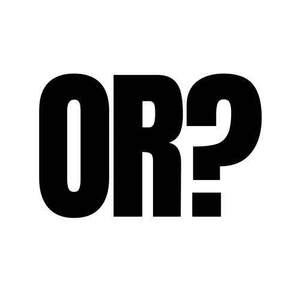

Trade Mark Journal No.2025/021 23 May 2025
UK00004199385 6 May 2025 (18,25)

- Class 18
- Bags; Tote bags; Luggage bags; Duffle bags; Carry-on bags; Toiletry bags; Bags for clothes; Drawstring bags; Carry-all bags; Belt bags and hip bags; Carrying bags; Grocery tote bags; Cross-body bags; Luggage, bags, wallets and other carriers; Crossbody bags; Cloth bags; Bucket bags; Canvas bags; Duffel bags for travel; Clutch bags; Kit bags; Travel bags; Bags for travel; Messenger bags; Shoulder bags; Toilet bags; Make-up bags; Cosmetic bags; Waterproof bags; Reusable shopping bags; Makeup bags; Towelling bags; Bags for campers; Gym bags; Hand bags; Knitted bags; Travelling bags; Cabin bags; Traveling bags; Overnight bags; Beach bags; Boot bags; Mesh shopping bags; Canvas shopping bags; Hiking bags; Bum bags; Wash bags for carrying toiletries; Waist bags.
- Class 25
- Clothing; Knitwear [clothing]; Jackets [clothing]; Ready-to-wear clothing; Woolen clothing; Headbands [clothing]; Gloves [clothing]; Gloves as clothing; Clothes; Jerseys [clothing]; Denims [clothing]; Shorts [clothing]; Cashmere clothing; Oilskins [clothing]; Gabardines [clothing]; Silk clothing; Knitted clothing; Windproof clothing; Hoods [clothing]; Embroidered clothing; Belts [clothing]; Rainproof clothing; Casual clothing; Waterproof clothing; Visors [clothing]; Jackets being sports clothing; Jackets (Stuff -) [clothing]; Playsuits [clothing]; Bottoms [clothing]; Clothing for leisure wear; Ready-made clothing; Leisure clothing; Clothing for sports; Sports clothing; Clothing for children; Athletic clothing; Muffs [clothing]; Bodies [clothing]; Tops [clothing]; Clothing for cycling; Weatherproof clothing; Water-resistant clothing; Handwarmers [clothing]; Clothing for skiing; Beach clothing; Thermal clothing; Men's clothing; Dance clothing.
Disco Goat Ltd